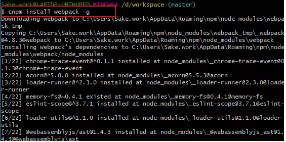
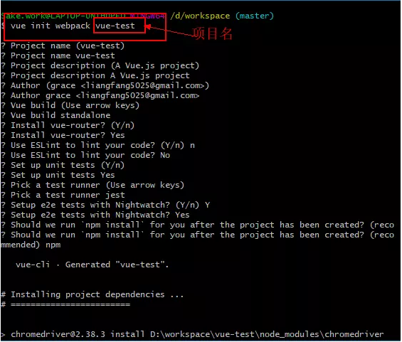
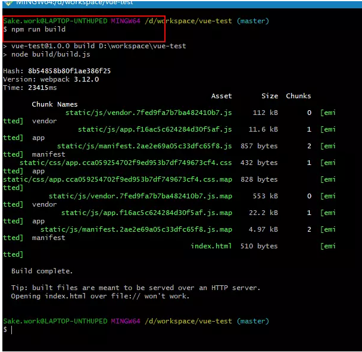
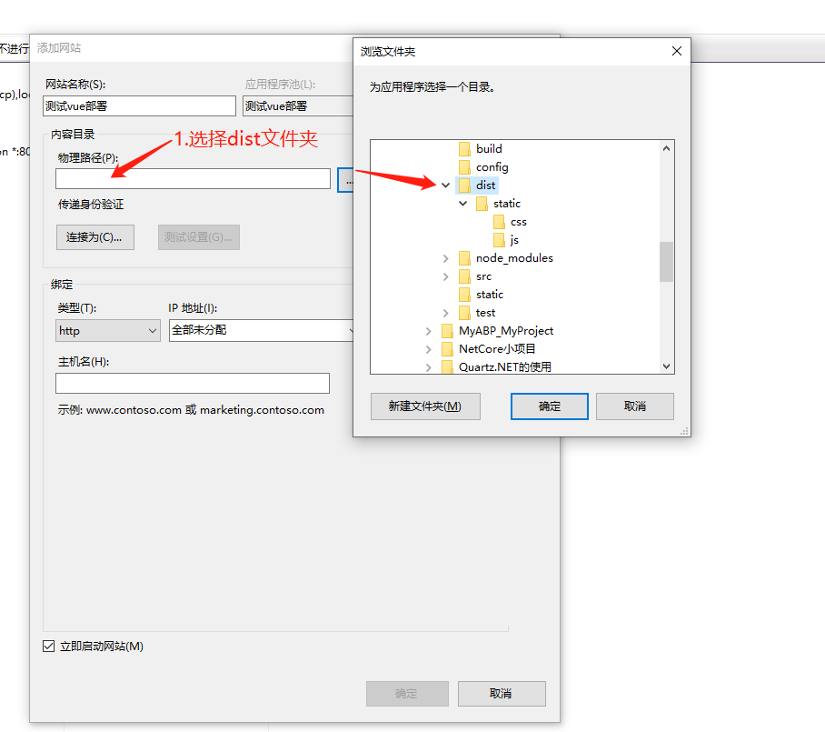
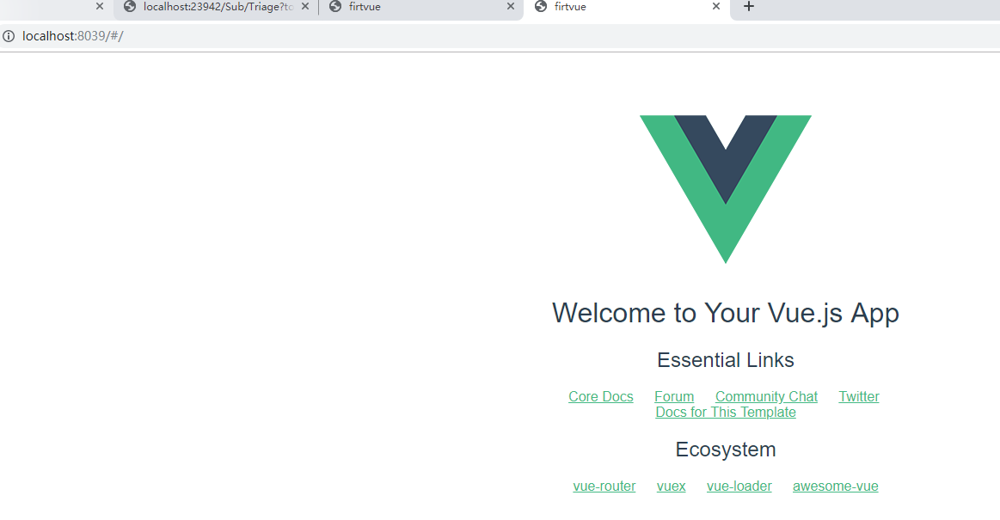
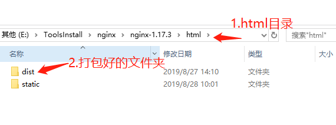
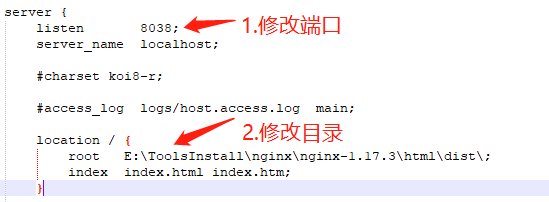
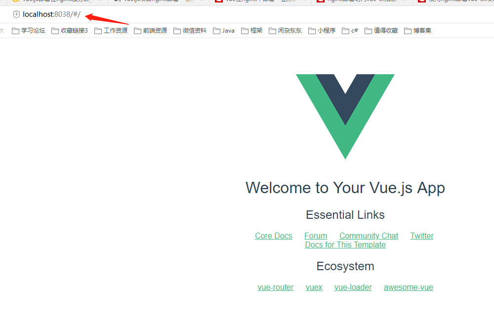

原文连接:https://www.cnblogs.com/xmkd/p/11419263.html
1.前端框架一般依赖node.js，我们首先要安装node.js.请参考：
http://www.cnblogs.com/wuac/p/6381819.html
to：安装好node.js后npm也安装OK了 , 自己在设置一下环境变量路径配置 自行百度。。
查看node版本命令：node -v
查看npm版本命令： npm -v
2.npm 的源都在国外的地址，安装起来特别慢，这里利用淘宝的镜像服务器。
安装命令为：npm install -g cnpm --registry=https://registry.npm.taobao.org
3.接着安装全局的vue-cli脚手架，用于帮助你快速搭建所需的Vue的开发模板框架$ cnpm install -g vue-cli回车，等待安装,安装完成后，可以输入vue -V 然后回车，如果出现vue客户端版本号，则说明成功的安装
查看vue版本命令：vue -V ，注意是大写的 V
4.用npm安装webpack安装命令：cnpm install webpack -g
webpack已经安装到了全局环境下，可以通过命令webpack -h试试.

5.在一个目录下新建一个文件夹，cd到该目录下，然后输入命令： vue init webpack vue-test //(项目名称:vue-test) 创建一个vue项目

以上表示新建vue项目运行成功
打包命令：npm run build 执行打包

8.打包成功后项目下生成了一个dist文件夹 ，（ dist文件夹下的文件）

9.iis部署dist文件夹，端口自己设置

浏览器敲localhost:8039
到此表示本地iis服务器部署vue.js成功

2：部署在nginx服务器上
1.把打包好的dist文件夹拷贝到安装nginx里的html文件夹下

2.修改 nginx.conf 配置文件 （1：修改一下端口。需要注意不要使用nginx默认的80端口，这个端口一般都被计算机其它程序占用了， 2：修改目录）

3.运行nginx服务器， cd 到nginx里的安装目录 ， 输入启动命令：start nginx.exe
打开浏览器输入地址与端口，显示运行成功
至此，vue.js分别部署iis服务器与nginx服务器成功。

本文参考文章：https://www.jianshu.com/p/4cde96b538e6?utm_campaign=maleskine&utm_content=note&utm_medium=seo_notes&utm_source=recommendation